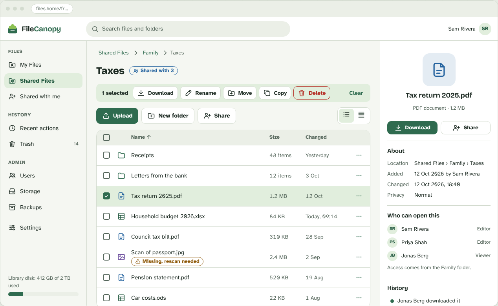
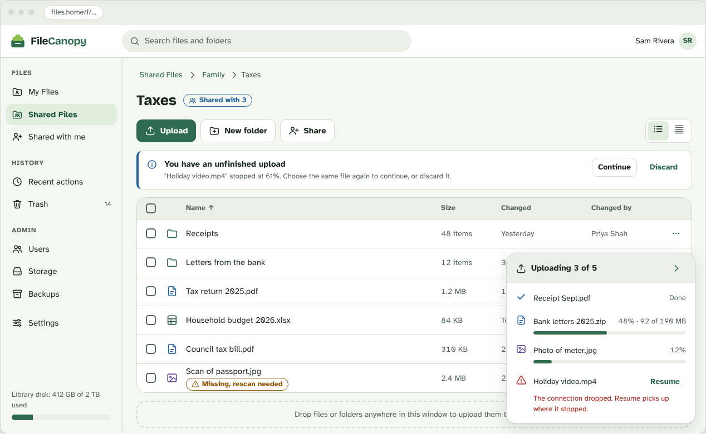
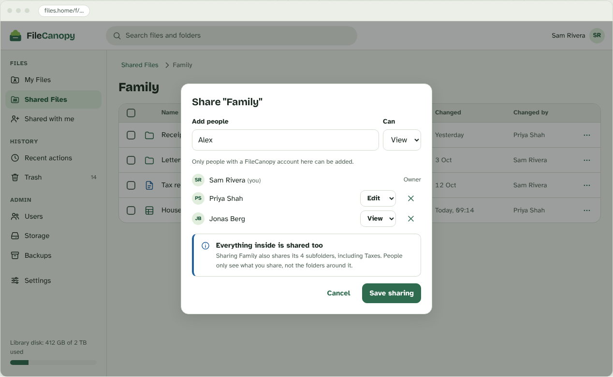
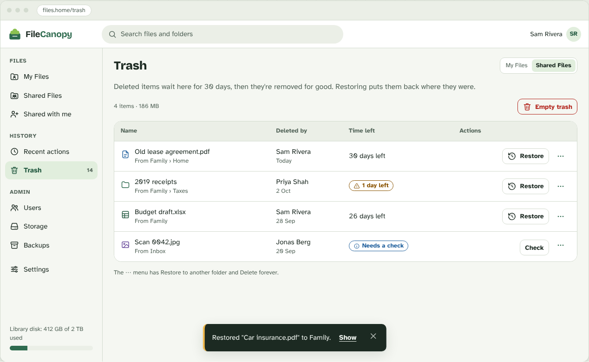
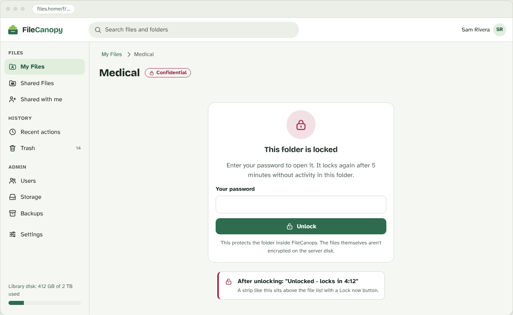
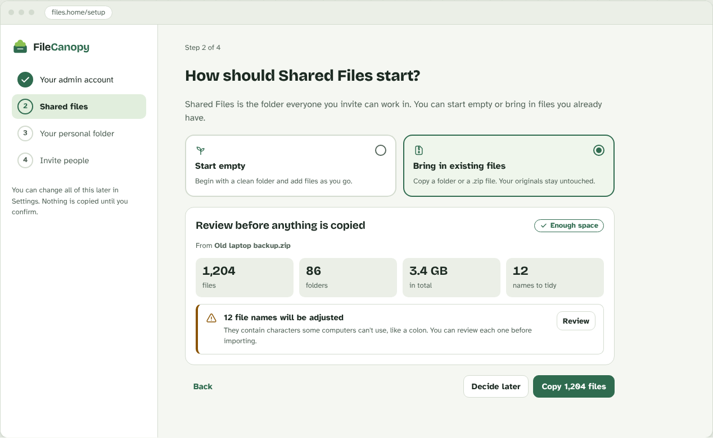
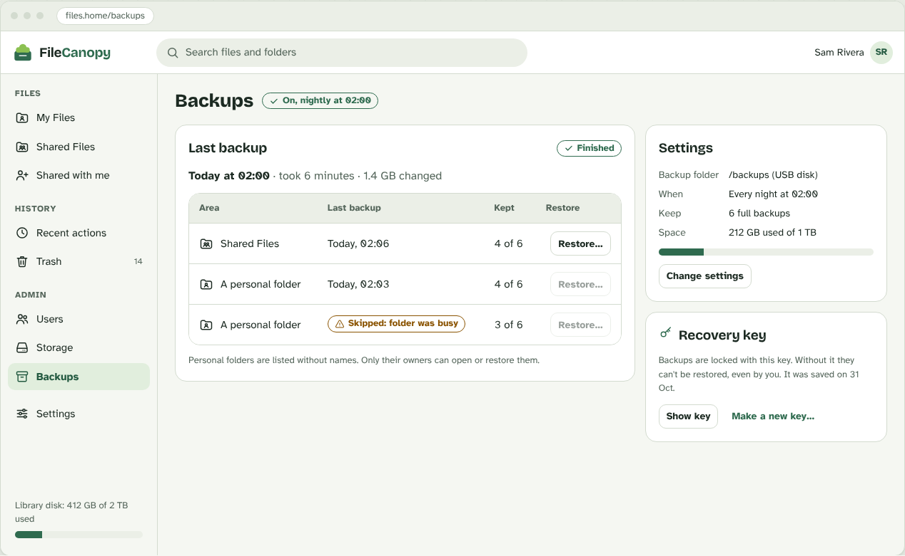
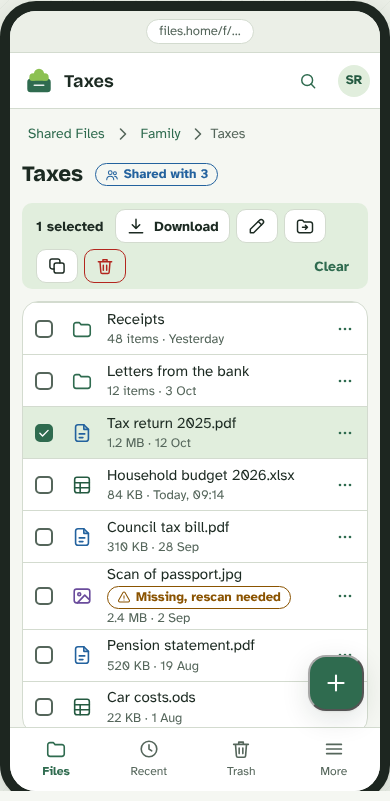

AI that organizes, searches and answers from your files.
FileCanopy is an AI-powered, self-hosted file library. Point it at a messy folder and it proposes names, folders and collections. Ask it a question and it answers from your own documents. Search by meaning, with a cloud model or one running on your own network. Your files stay ordinary files in a folder you own.

Screens on this page are design previews, not live screenshots. The real interface is still being brought in line with them.
A library that helps you keep it tidy
AI proposes, you decide. Nothing is renamed, moved or split until you press Apply, and every change can be undone.
Organize with AI
Get a better name and the right folder for a file. Split a long PDF into its real documents, spot duplicates, and group files into collections.
Chat with your files
Ask a question and get an answer written from your own documents, with the source files listed so you can check them.
Search by meaning
Run a local embedding model such as EmbeddingGemma and find the note about a holiday trip by searching “vacation”. It stays on your own network.
Local or cloud
Use Anthropic, OpenAI or Gemini with monthly spending caps, or Ollama and llama.cpp on your own hardware. Private and Confidential files never go to a cloud AI.
Connect your AI tools
An optional read-only MCP endpoint lets an AI assistant look at the files it is allowed to see.
Safe by design
AI follows the same permissions as you do. It cannot change who can see a file, lower a privacy label or delete anything.
What you can do with it
Real jobs people put off for years. AI does the legwork, you review it, and nothing changes until you press Apply.
Tidy a messy import
Import years of "scan0042.pdf" and "New folder (3)". AI proposes clear names and the right folders, and you accept or skip each suggestion.
Split a scanned stack
One scan of ten different letters becomes ten separate documents. AI finds where each one starts and ends, and you approve the split.
Find a document by meaning
Search "the letter about the roof leak" without knowing the file name. A local embedding model such as EmbeddingGemma runs on your own hardware, so nothing leaves your network.
Ask your files a question
"When does my car insurance renew?" Get an answer written from your documents, with the source files listed so you can check.
Collections and duplicates
Let AI gather everything about a house purchase or a trip into a collection, and point out duplicate files so you can clear them out.
Use your own AI tools
Turn on the optional read-only MCP endpoint so an AI assistant you already use can look up the files it is allowed to see.
Everything around the AI, done properly
The database only keeps accounts, permissions and history. It never replaces your files.
Normal files, always
The library is a plain folder tree on your disk. Nothing is converted, hidden or locked in.
Personal and shared folders
Everyone gets a personal folder. A shared folder lets you give others viewer or editor access, and administrators can’t open anyone’s personal files.
Everyday file work
Browse, upload files and whole folders, download, rename, move and copy. Works with the keyboard and on a phone.
Trash, undo and history
Deleted items go to a trash you can restore from, recent actions can be undone, and an activity log records who did what.
Private and Confidential folders
Label folders as Private or Confidential. Confidential folders ask for your password again and lock when you step away.
Previews and search
View PDFs, images and text in the app. Office documents open through an optional sandboxed converter. Search file names and contents, with optional OCR for scans.
Import what you have
During first setup, import an existing folder or a zip file.
Optional encrypted backups
Back up the library to a separate disk you choose. Off by default.
Warm, friendly and readable
Light and dark themes follow your device. Lists are comfortable by default, with a compact option.














On your phone
The same files, with a bottom tab bar, large touch targets and a layout made for small screens. Nothing to install: it runs in your phone's browser.
Running in a few minutes
You need Docker with Docker Compose v2.24 or newer. The images are pulled from GitHub Container Registry; nothing is built on your machine and there is no password to choose.
-
Download one file and start
This creates the
libraryfolder next to it and starts everything.mkdir filecanopy && cd filecanopy curl -fsSLO https://raw.githubusercontent.com/Aulteran/FileCanopy/HEAD/deploy/compose.yaml docker compose up -d --wait
-
Open the app and finish setup
Go to
http://127.0.0.1:8080. The first visit asks for a one-time setup token, which the API prints to its log. Then create the administrator account and, if you like, import an existing folder or zip.docker compose logs api | grep "SETUP TOKEN"
-
Turn on AI
As an administrator, add a provider in the AI settings: an Anthropic, OpenAI or Gemini key, or a model on your own network through Ollama or llama.cpp. Add a local embedding model for search by meaning.
Using it from other devices? The app listens only on
127.0.0.1. Put a TLS reverse proxy in front of it;
setups for Nginx Proxy Manager, nginx, Caddy, Traefik and Cloudflare
Tunnel are in the
proxy guide. The
documentation
covers configuration, updating, backups and where your data lives.
For provider setup and semantic search, see the
AI guide. Optional services (OCR, converter, backups) are separate switches
described there. FileCanopy also runs without an AI provider.
First public beta is out
The beta Docker images are published on GitHub Container Registry and the quick start above installs them. A stable 1.0.0 release is still to come.
What beta means here
Everything described on this page is built. There is no external security audit yet, so keep a separate copy of anything important.
Know the limits
Docker is the supported way to run it, and the beta images are for amd64 only. Proxmox LXC is not available yet. Anyone with access to the server's disk can read the library, like any other folder.
Screens are previews
The screenshots on this page are design previews while the interface is being finished.
Details are in the known issues and the roadmap.
Docs and source
Source code, issues and the documentation.
WikiUser documentation. It is being written and will be filled in as the project matures.
Design decisionsThe reasoning behind how FileCanopy works, written down as short records.
Ideas and problemsOpen an issue to discuss an idea before sending a large change.